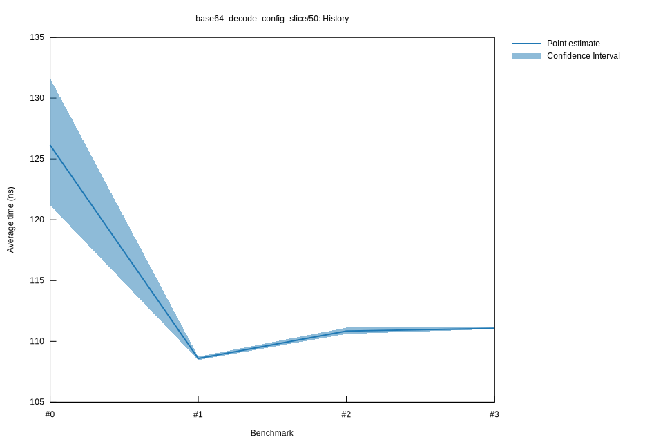

# 32022-10-15T17:17:27+03:00
|
Lower Bound |
Estimate |
Upper Bound |
| Value: |
111.02ns |
111.07ns |
111.13ns |
| Throughput: |
584.14MiB/s |
583.84MiB/s |
583.55MiB/s |
| Change in Value: |
-0.2047% |
+0.0879% |
+0.4085% |
| Change in Throughput: |
+0.2051% |
-0.0878% |
-0.4068% |
Change within noise threshold.
# 22022-10-15T16:51:42+03:00
|
Lower Bound |
Estimate |
Upper Bound |
| Value: |
110.62ns |
110.85ns |
111.13ns |
| Throughput: |
586.26MiB/s |
585.01MiB/s |
583.54MiB/s |
| Change in Value: |
+1.8742% |
+2.1978% |
+2.5212% |
| Change in Throughput: |
-1.8397% |
-2.1505% |
-2.4592% |
No change in performance detected.
# 12022-10-08T17:28:26+03:00
|
Lower Bound |
Estimate |
Upper Bound |
| Value: |
108.47ns |
108.59ns |
108.74ns |
| Throughput: |
597.86MiB/s |
597.18MiB/s |
596.36MiB/s |
| Change in Value: |
-13.134% |
-10.643% |
-8.4240% |
| Change in Throughput: |
+15.120% |
+11.910% |
+9.1989% |
No change in performance detected.
# 02022-10-08T17:09:18+03:00
|
Lower Bound |
Estimate |
Upper Bound |
| Value: |
121.20ns |
126.13ns |
131.64ns |
| Throughput: |
535.08MiB/s |
514.14MiB/s |
492.64MiB/s |